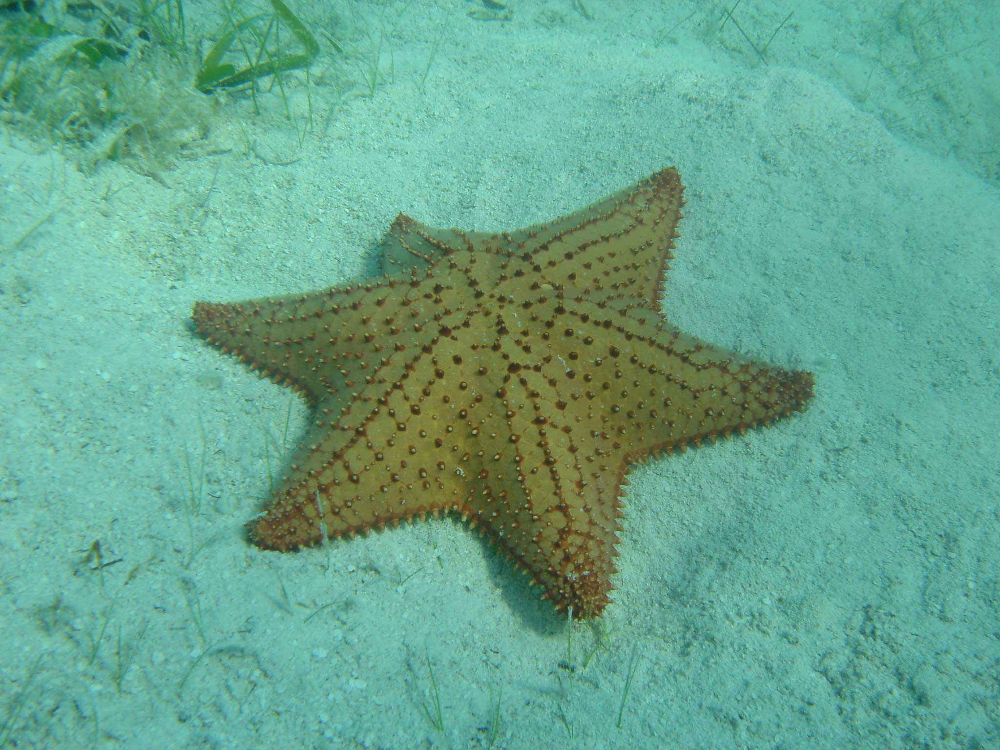
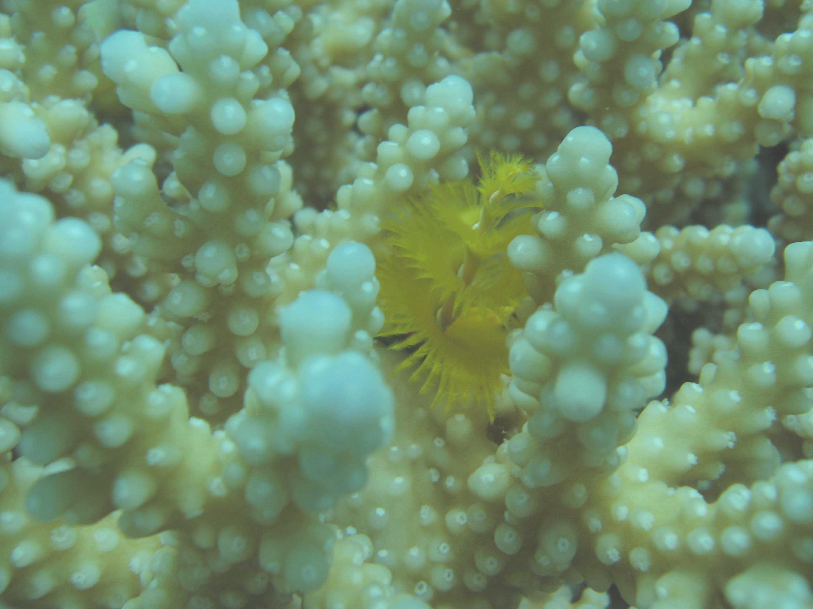

|  |
|
|||||
Leon H Charney School of Marine Sciences, Unniversity of Haifa |
||||||
|
DEEP MED RESEARCH GROUP (Established 2009)
Marine Biology in the easternmost Mediterranean Head of the DEEPMED: Dr. Dan Tchernov Lab manager: Dr. Eli Shemesh Main Topics Physiology of Photosynthesis Ecology and biodivesity of the deep Levantine basin Deep benthos microbiology and biogeochemistry Masophotic reefs Global change - ocean acidification and coral bleaching Paleobiology MIssion Long and
short-term environmental changes affect and modify complex
biological systems on a multitude of levels.
From a strictly anthropocentric standpoint the understanding of such processes can assist in perceiving the current changes our ecosystems are undergoing. Our own habitat has entered an unfamiliar zone in terms of global carbon biogeochemical cycles, as atmospheric CO2 levels rose for the first time in 620,000 years above 280 ppmv. These changes are bound to have significant effects on the global climate as the deviation from the glacial interglacial steady state increases. I have chosen to study two systems, corals and marine phytoplankton, which may assist in elucidating complex systems reactions to environmental shifts. My choice to study these systems was due to their evident responses to environmental changes and their abundance throughout the geological record, thus providing contemporary physiologically measurable subjects that can be manipulated in the laboratory or tested in-situ. Additionally, these two systems leave behind skeletons that are harboring possible markers that can uncover past climatic events. Both systems have a substantial fossil record that can help unravel the evolutionary changes that occurred following these events. Yet another benefit arises from investigating these two systems simultaneously; a better understanding of the physiology of phytoplankton increases the chance of correctly interpreting data from the much more complex coral symbiosis. During the past five years my lab is going through a drastic change as we moved from the warm and tranquil setting of the Red sea to the Mediterranean front. Here, we are facing a staggering enigma that I set my mind on tackling: what are the basic mechanisms that cause the immense shift of fauna and flora over the past forty years. Why the diversity split between deeper methane supported systems and shallow waters? What is the part of man in all these rapid changes? And ever since, we are amerced in totally new worlds that include investigating the biodiversity of the eastern basin, step by step, trying to get a handle on the structure and functions of this ecosystem and establishing a baseline for future research to come. Our overarching research aspiration is to enhance our understanding of thefundamental
effects that global climatic changes has on the marine environment. Some of the current processes in the Mediterranean sea are intriguing and we are looking into the source of the massive shift in the fauna and flora that is ongoing for almost four decades . Still a long way to go:
" The woods are lovely, dark and deep But I have promises to keep, And miles to go before I sleep, And miles to go before I sleep. " Robert frost
|
New Publications
 |
|||||